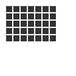

autotext()
Syntax
autotext()
Description
Generates random text from an XML-document. Autotext is a very powerful feature once you
learn how to use it. NodeBox has a built-in implementation of the Kant Generator Pro.
XML-files for the Kant Generator have a specified structure. Further information can be
found at http://diveintopython.org/xml_processing/
Returns
a string containing automatically generated text
Tutorial
Example
fontsize(9) lineheight(0.8) txt = autotext("kant.xml") text(txt, 5, 10, width=110) |
Download
choice()
Syntax
choice(list)
Description
Returns one random item from the list supplied as parameter. Using the choice() command
is an alternative to the obscure list[random(len(list)] command.
Returns
a random item from the given list
Tutorial
Example
words = ["NodeBox", "Ekky-ekky!", "z'Boing!"] c = choice(words) # Variable c contains a random item from the words list # So variable c might now be "NodeBox"... # or "Ekky-ekky!"... # or "z'Boing!" |
files()
Syntax
files(path)
Description
Retrieves all files from a given path and returns their names as a list.
Returns
a list with the names of the files in the given path
Example
f = files("images/*.jpg") image(choice(f), 10, 10) |
grid()
Syntax
grid(cols, rows, colsize=1, rowsize=1)
Description
The grid() command returns an iteratable object, something that can be traversed in a
for-loop (like the range() command for example). The grid() is a more complex, but very
powerful command. The first two parameters define the number of columns and rows in the
grid. The next two parameters are optional, and set the width and height of one cell in
the grid. Each iteration in a for-loop, the offset for the current column and row is
returned.
Returns
tuples of x/y coordinates that can be used in a for-loop
Example
|  |
fill(0.2) for x, y in grid(7, 5, 12, 12): rect(10+x, 10+y, 10, 10) |
open()
Syntax
open(path).read()
Description
The open() command opens a file specified by the path parameter. The open() command can
be used in two ways: open(path).read(), which returns the file's text content as a
string, or, alternatively, open(path).readlines(), which returns a list of text lines.
Returns
the file's text content, as a string
Tutorial
Example
# Prints the contents of sample.txt as a whole txt = open("sample.txt").read() print txt # Prints the contents line per line txt = open("sample.txt").readlines() for line in txt: print line |
random()
Syntax
random(v1=None, v2=None)
Description
Returns a random number that can be assigned to a variable or a parameter. When no
parameters are supplied, returns a floating-point (decimal) number between 0.0 and 1.0
(including 0.0 and 1.0). When one parameter is supplied, returns a number between 0 and
this parameter. When two parameters are supplied, returns a number between the first and
the second parameter. The random() command is useful for all sorts of operations, from
random colors to lines with a random width.
Note: new random values are returned each time the script runs. The variation can be
locked by supplying a custom random seed:
from random import seed
seed(0)
Returns
a random number (either an integer or floating-point) within the given boundaries
Tutorial
Example
r = random() # returns a float between 0 and 1 r = random(2.5) # returns a float between 0 and 2.5 r = random(-1.0, 1.0) # returns a float between -1.0 and 1.0 r = random(5) # returns an int between 0 and 5 r = random(1, 10) # returns an int between 1 and 10 # sets the fill to anything from # black (0.0,0,0) to red (1.0,0,0) fill(random(), 0, 0) |
size()
Syntax
size(w, h)
Description
Sets the size of the canvas in points. The first parameter sets the width, the second
parameter the height. If this command is used, it should be the first line in a script -
it's illogical to set the size of the canvas halfway a script! The supplied values can be
multiplied by "inch", "cm" or "mm". The predefined WIDTH and HEIGHT variables can be used
to obtain the canvas size.
Tutorial
Example
size(400, 600) # the canvas is 400 X 600 points print WIDTH # prints 400 print HEIGHT # prints 600 size(20*cm, 20*cm) # the canvas is 20 x 20 cm |
var()
Syntax
var(name, type, default, min, max)
Description
The variables sheet creates connections between a variable and a user interface control,
such as a slider, textfield or check box. The most convenient way of creating variables
is through the Python > Variables menu. Variables created like this become part of the
global namespace, meaning you can access them just like any other variable.
Tutorial
Example

|
var("amount", NUMBER, 30, 0, 100) background(0.1, 0, 0.0) for i in range(int(amount)): rotate(15) image("10.png", 5, 5, alpha=0.25) |